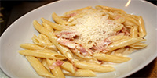

Receita De Bolo de Cenoura
Bolo de cenoura com cobertura de chocolate é um clássico que nunca sai de moda, agradando das gerações mais antigas às mais atuais. Veja esta simples receita de liquidificador que garante um sabor excelente e arrase com o quitute que pode ser servido como sobremesa ou lanche. Confira como fazer!

Receita De Bolo de banana fit
Se você está de dieta, que tal preparar um bolo de banana fit? Feita no liquidificador, a receita sem glúten substitui a farinha de trigo por aveia. Açúcar mascavo e canela dão um toque especial ao doce. Confira como fazer!

Receita De Penne à carbonara
Aprenda a fazer um penne à carbonara fácil e ótimo para os dias de frio. Os ingredientes são simples e a receita fica pronta num instante. Confira como fazer!
Criador do site: Stanley H. Ribeiro Florencio
Para entrar em contato entre no meu perfil do linkedin Clicando aqui! ou me enviando um email: Clicando aqui!